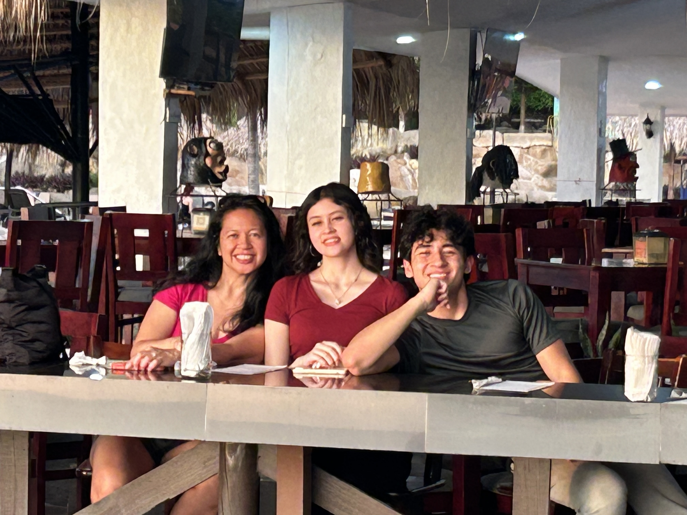

Caden Clark's Introduction

Me (far right) with my sister and mom in Costa Rica
- Personal Background: I was born and raised in Charlotte and rep the city as much as I can. Am also a big Charlotte sports fan so catch me at Panthers and Hornets fans.
- Professional Background: Currently work for a catering company that caters events around the Charlotte and North Carolina area.
- Academic Background: Currently a Sophomore majoring in Computer Science with a concentration in Software Engineering.
- Background in this Subject: Created websites with online tools when I was like 12 but haven’t worked on frontend stuff since then. Have taken the intro classes so am proficient in Java but thats about it.
- Primary Computer Platform: Windows 10
- Courses I'm Taking & Why:
- LBST 2301 - Critical Thinking and Communication (WRDS): Critical thinkings is important in all aspects of life (and the class is mandatory for my major).
- STAT 2122 - Intro to Prob & Stat: Some of the math might translate over to Computer Science (and the class is mandatory for my major).
- ITIS 3135 - Web-Based Application Design and Development: To be a well-rounded developer I should know the basics of front-end development and how CSS and JS work and are implemented.
- ITCS 3160 - Database Design and Implementation: Companies use databases and I should probably know how they work.
- Funny/Interesting Item to Remember me by: I am scuba certified through PADI and though I haven’t scuba dived in like six years, it is really fun.
- I'd also like to Share: I like to workout so come say hi in the UREC. Am also in the fraternity Pi Kappa Alpha, rush PIKE!